Chapter 2.3: Calculating Limits Using the Limit Laws
Suppose that c is a constant and the limits
\lim_{x \to a} f(x)
and
\lim_{x \to a} g(x)
exist. Then…
Limit Laws
\underline{\textbf{Sum Law}} \\ ~\\ 1.\; \lim_{x \to a} [f(x) + g(x)] = \lim_{x \to a} f(x) + \lim_{x \to a} g(x) \\ ~\\ \underline{\textbf{Difference Law}} \\ ~\\ 2.\; \lim_{x \to a} [f(x) - g(x)] = \lim_{x \to a} f(x) - \lim_{x \to a} g(x) \\ ~\\ \underline{\textbf{Constant Multiple Law}} \\ ~\\ 3.\; \lim_{x \to a} [cf(x)] = c \lim_{x \to a} f(x) \\ ~\\ \underline{\textbf{Product Law}} \\ ~\\ 4.\; \lim_{x \to a} [f(x)g(x)] = \lim_{x \to a} f(x) \cdot \lim_{x \to a} g(x) \\ ~\\ \underline{\textbf{Quotient Law}} \\ ~\\ 5.\; \lim_{x \to a} \frac{f(x)}{g(x)} = \frac{\lim_{x \to a} f(x)}{\lim_{x \to a} g(x)} \text{ if } \lim_{x \to a} g(x) \neq 0 \\ ~\\ \underline{\textbf{Power Law}} \\ ~\\ 6.\; \lim_{x \to a} [f(x)]^{n} = [\lim_{x \to a} f(x)]^{n} \; \text{ where } n \text{ is a positive integer } \\ ~\\ 7.\; \lim_{x \to a} c = c \\ ~\\ 8.\; \lim_{x \to a} x = a \\ ~\\ 9.\; \lim_{x \to a} x^{n} = a^{n} \; \text{ where } n \text{ is a positive integer } \\ ~\\ 10.\; \lim_{x \to a} \sqrt[n]{x} = \sqrt[n]{a} \; \text{ where } n \text{ is a positive integer } ~\\ \underline{\textbf{Root Law}} \\ ~\\ 11.\; \lim_{x \to a} \sqrt[n]{f(x)} = \sqrt[n]{\lim_{x \to a} f(x)} \; \text{ where } n \text{ is a positive integer } \\ ~\\ [\text{ if } n \text{ is even, we assume that } \lim_{x \to a} f(x) > 0 \text{. }]
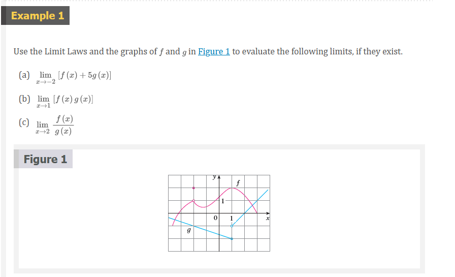 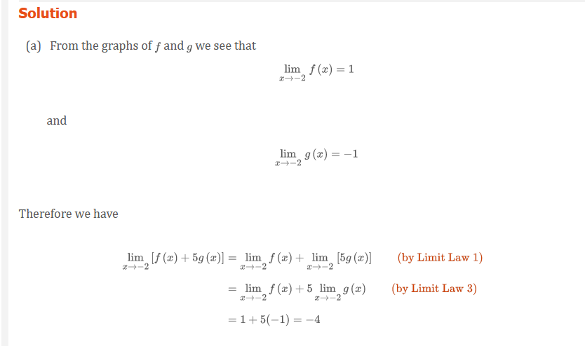  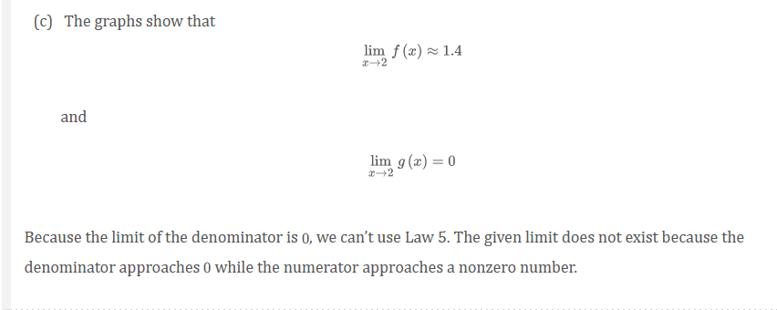 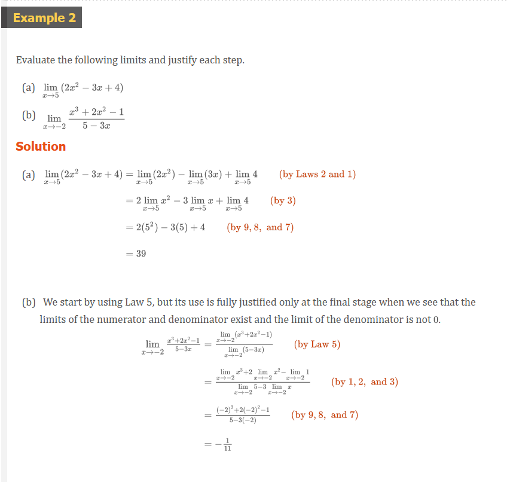
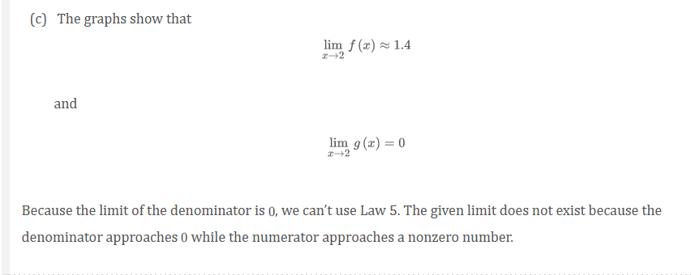 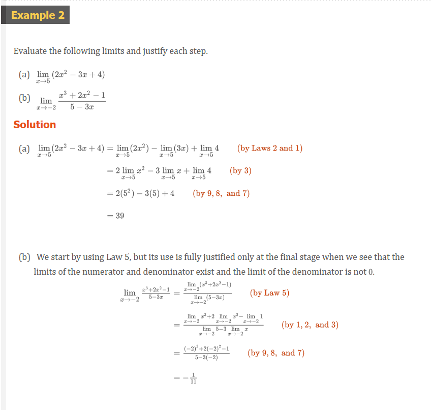
Direct Substitution Property
If f is a polynomial or a rational function and a is in the domain of f, then
\lim_{x \to a} f(x) = f(a)
NOTE: Notice that in Example 3 we do not have an infinite limit even though the denominator approaches 0 as x \to 1. When both numerator and denominator approach 0 the limit may be infinite or it may be some finite value.
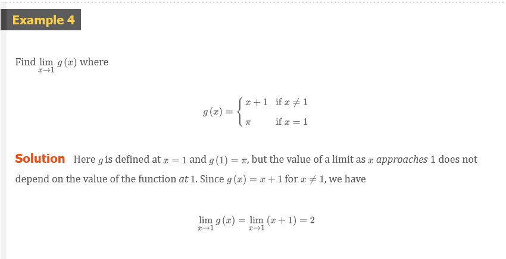 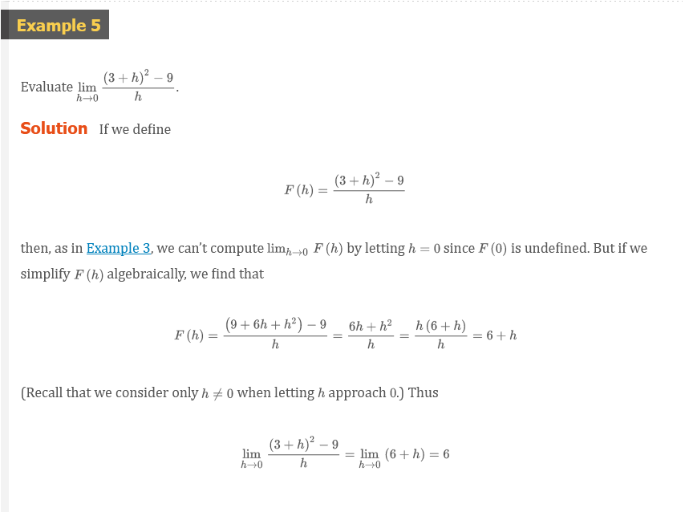 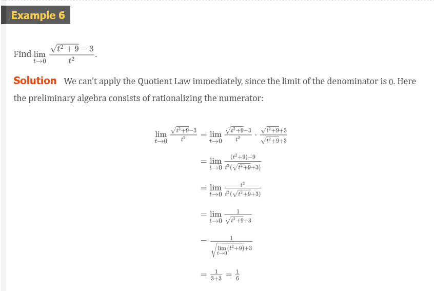
Theorem 1
\lim_{x \to a} f(x) = L
if and only if
\lim_{x \to a^{-}} f(x) = L = \lim_{x \to a^{+}} f(x)
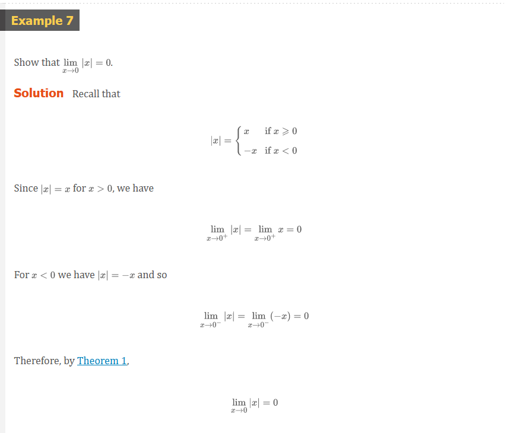 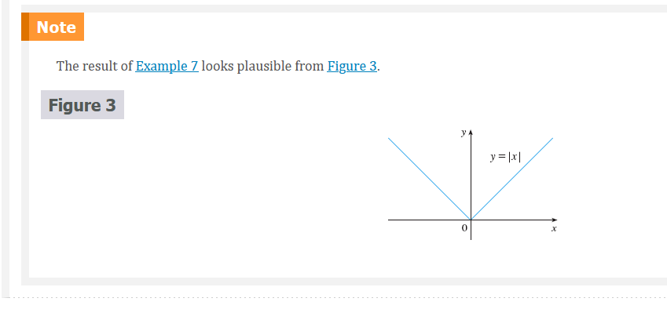 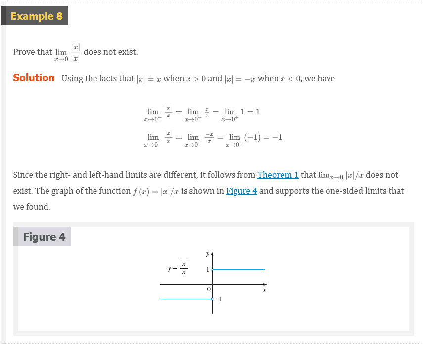 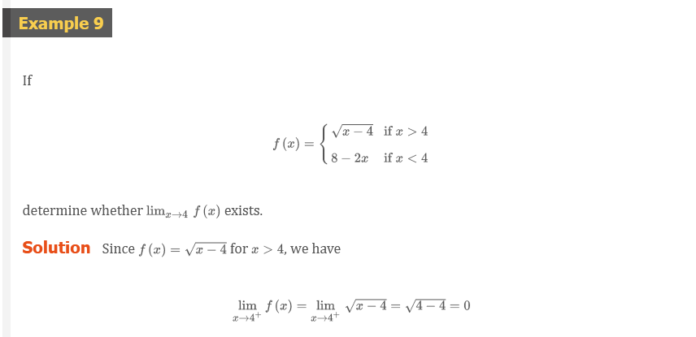 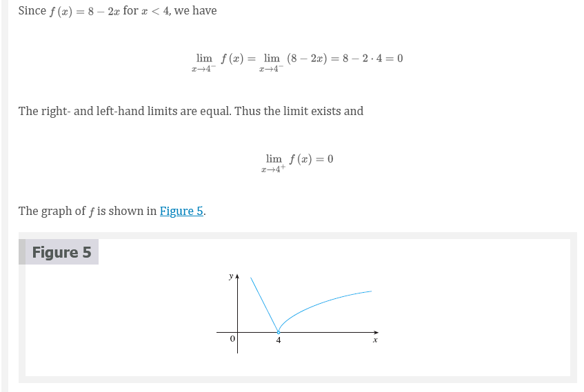 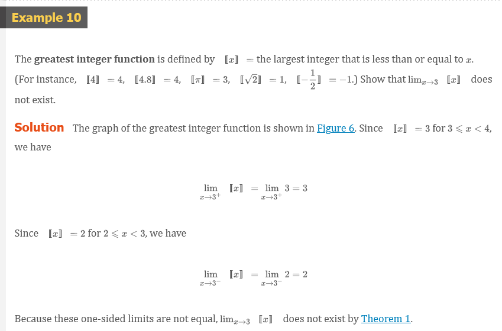 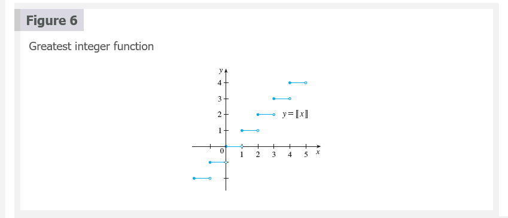
Theorem 2
if f(x) \le g(x) when x is near a (except possibly at a) and the limits of f and g both exist as x approaches a then
\lim_{x \to a} f(x) \le \lim_{x \to a} g(x)
The Squeeze Theorem
if f(x) \le g(x) \le h(x) when x is near a (except possibly at x) and
\lim_{x \to a} f(x) = \lim_{x \to a} h(x) = L
then
\lim_{x \to a} g(x) = L
The Squeeze Theorem, which is sometimes called the Sandwich Theorem or the Pinching Theorem, is illustrated by Figure 7. It says if g(x) is squeezed between f(x) and h(x) near a, and if f and h have the same limit L at a, then g is forced to have the same limit L at a.
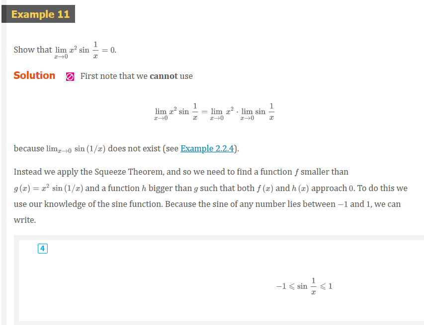 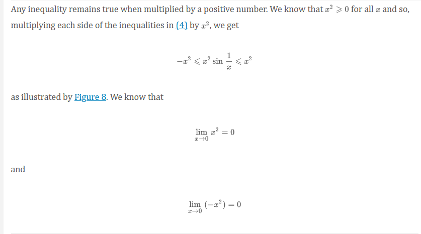 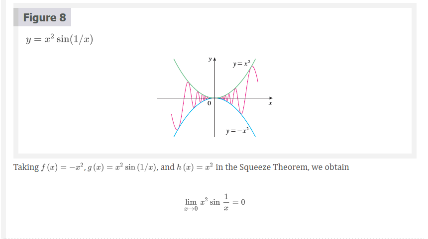
Video Lectures
- 📺 Limit properties
- 📺 Limits of combined functions
- 📺 Limits of combined functions: piecewise functions
- 📺 Limits by direct substitution
- 📺 Undefined limits by direct substitution
- 📺 Limits of trigonometric functions
- 📺 Limits of piecewise functions
- 📺 How to Graph a Piecewise Function
- 📺 Graphing a Piecewise Function
- 📺 Limits of piecewise functions: absolute value
- 📺 Limits by factoring
- 📺 Limits by rationalizing
Resources
- 📑 Conjugates
- 📺 Limit properties
- 📺 Limits of combined functions
- 📺 Limits of combined functions: piecewise functions
- 📺 Limits by direct substitution
- 📺 Undefined limits by direct substitution
- 📺 Limits of trigonometric functions
- 📺 Limits of piecewise functions
- 📺 How to Graph a Piecewise Function
- 📺 Graphing a Piecewise Function
- 📺 Limits of piecewise functions: absolute value
- 📺 Limits by factoring
- 📺 Limits by rationalizing
Textbook